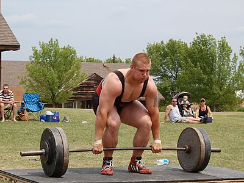
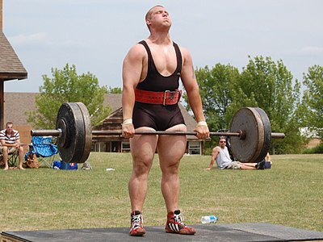
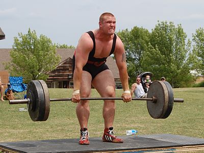

데드리프트(deadlift)는 가장 대표적인 웨이트 트레이닝 운동 중 하나로, 바닥에 놓인 바벨을 잡고 팔을 구부리지 않은 자세로 엉덩이 높이까지 들어올리는 식으로 행한다.
웨이트 트레이닝에서 이 운동을 행하는 주 목적은 다리 근육과 엉덩이 근육을 단련하기 위한 것이다. 다리는 앞부분의 쿼드러셉트(Quadriceps)와 뒷부분의 햄스트링(Hamstrings)을 모두 단련하며, 엉덩이의 대표적인 세가지 근육인 대둔근(gluteus maximus), 중둔근(gluteus medius), 소둔근(gluteus minimus) 도 단련한다. 부수적으로 복근과 등 근육에도 넓게 영향을 미친다.